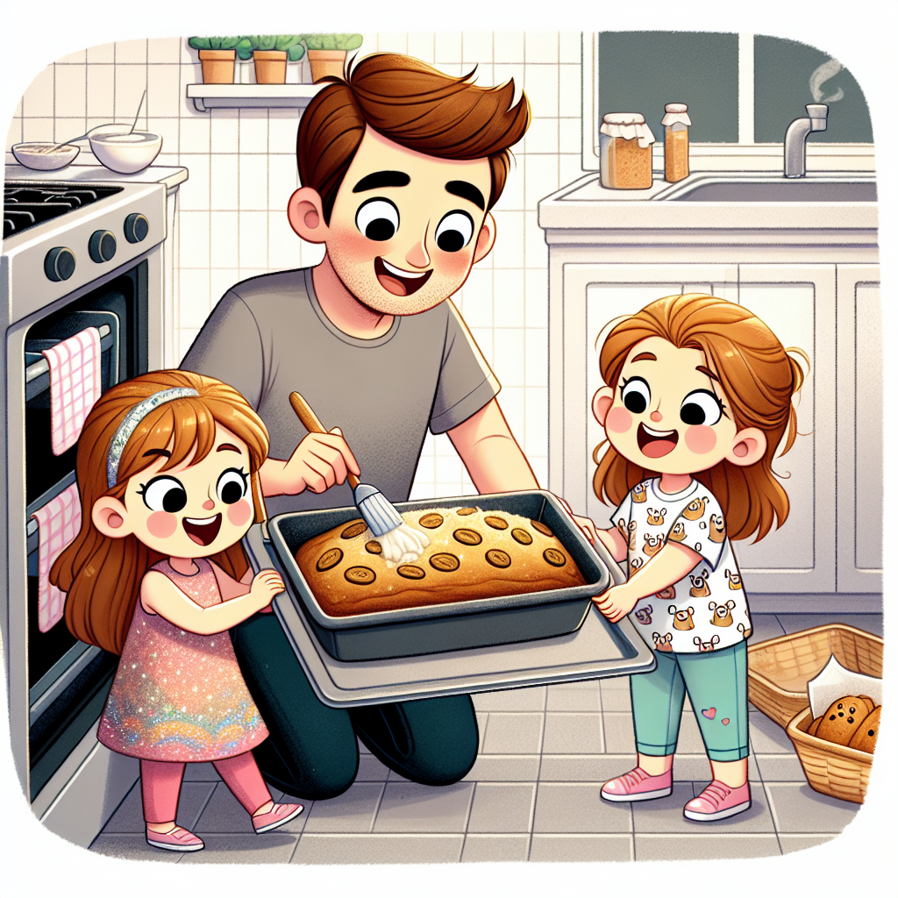

A Recipe for change - Creating a new recipe and image with OpenAI
Can we create recipes my family will like? Making a recipe for healthy banana bread with my kids.
Quarto
Python
OpenAI
Author
Matt Leary
Published
March 30, 2024
For this project, I wanted to create a recipe for healthy banana bread that my kids would enjoy. I used OpenAI to generate the recipe and ingredients list, used that output to make the recipe with my two daughters (Nora and Tess) and then we used OpenAI to generate an images of the recipe being made. If you haven’t explored the world of prompt engineering with a 3.5 and 5.5 year old, I can’t explain the strange requests you might get. Also, I can’t say 3 and 5 year old, because the half year is apparently very important.
I hope you enjoy the recipe and the images, it was a lot of fun for us to work on it together! I’ll walk through some of the prompt engineering we explored along the way.
Setting up the system and role prompts
First step, we need to set up the system and user prompts. The system prompt is the role of the AI system, and the user prompt is the request we are making of the AI system. So the system prompt defines HOW the the AI system should respond, and the user prompt defines WHAT we are asking the AI to do. the system prompt can be useful if you have multiple requests and want to keep the response consistent without having to repeat the same set of instructions each time. You can also use it to define the output format, such as JSON, or to specify any other requirements for the response. Again I found this helpful since I had a specific data format I wanted.
In this case, we are asking the AI to generate a recipe for healthy banana bread that kids will enjoy eating, and to use sugar alternatives as much as possible, such as honey or maple syrup.
Our system prompt is as follows:
"You are a culinary expert who specializes in creating simple but delicious meals. You will output a quick summary of the meal in a json format contain two key value pairs. First, a key "ingredients" which has the list of ingredients. Second, a key "steps", which has a step-by-step process for cooking the meal. The preference is to create meals with common ingredients and as few as ingredients as needed."
Our user prompt is as follows:
"I need a recipe for healthy banana bread, one that kids will enjoy eating. I prefer to use sugar alternatives as much as possible, such as honey or maple syrup."
hide / show code
role_system ='''"You are a culinary expert who specializes in creating simple but delicious meals. You will output a quick summary of the meal in a json format contain two key value pairs. First, a key "ingredients" which has the list of ingredients. Second, a key "steps", which has a step-by-step process for cooking the meal. The preference is to create meals with common ingredients and as few as ingredients as needed."'''role_user ="I need a recipe for healthy banana bread, one that kids will enjoy eating. I prefer to use sugar alternatives as much as possible, such as honey or maple syrup."
Using OpenAI to generate recipe and ingredients list
Now that we have our system and user prompts set up, we can use OpenAI to generate the recipe and ingredients list for healthy banana bread. We will pass in the system and user prompts to the OpenAI API and get back a response with the generated data. We will then extract the data from the response and convert it into a Python object that we can work with.
Note: I didn’t want to continually rerun the OPENAI API call, so I saved the result. This code doesn’t actually run now and I just open up the saved data file.
hide / show code
from openai import OpenAIimport osfrom secret_keys import OPENAI_KEYimport json# Create a completion with the OpenAI APIclient = OpenAI(api_key=OPENAI_KEY)completion = client.chat.completions.create( model="gpt-4-0125-preview", response_format={ "type": "json_object" }, messages=[ {"role": "system", "content": role_system}, {"role": "user", "content": role_user} ])# Extract the generated data from the completion objectresponse_data = completion.choices[0].message.content# Convert the JSON string into a Python objectdata_dict = json.loads(response_data)#with open('data.json', 'w') as file:# json.dump(data_dict, file)
And now we have the recipe and ingredients list for healthy banana bread that kids will enjoy eating. Let’s take a look at the ingredients and recipe steps.
The Ingredients we need
hide / show code
ingredients = data_dict['ingredients']markdown_list ="\n".join(f"- {ingredient}"for ingredient in ingredients)print(markdown_list)
- 3 ripe bananas
- 1/3 cup melted coconut oil
- 1/2 cup honey or maple syrup
- 2 eggs
- 1 teaspoon vanilla extract
- 1/4 cup milk or a milk alternative
- 1 teaspoon baking soda
- 1/2 teaspoon salt
- 1/2 teaspoon cinnamon
- 1 3/4 cups whole wheat flour
- Optional: 1/2 cup mix-ins such as chopped nuts, chocolate chips, or dried fruit
The Recipe
hide / show code
ingredients = data_dict['steps']markdown_list ="\n".join(f"- {ingredient}"for ingredient in ingredients)print(markdown_list)
- Preheat your oven to 325°F (165°C) and grease a 9x5-inch loaf pan.
- In a large bowl, mash the ripe bananas with a fork until completely smooth. Stir the melted coconut oil into the mashed bananas.
- Mix in the honey or maple syrup, beaten eggs, and vanilla extract. Then mix in the milk.
- Add the baking soda, salt, and cinnamon, and stir into the batter. Lastly, mix in the flour, just until combined. If you're adding any mix-ins, gently fold them in now.
- Pour the batter into your greased loaf pan and sprinkle a little cinnamon on top for extra flavor.
- Bake for 55 to 60 minutes, or until a toothpick inserted into the center comes out clean. Let the bread cool in the pan for a few minutes, then transfer it to a wire rack to cool completely before slicing.
- Enjoy your healthy banana bread as is, or toast slices and serve with a spread of nut butter for an extra protein boost.
I took those ingredients and recipe steps and made the recipe with my two daughters. The result was as good as any store bought mixes or recipes we have found online.
The Image Generation
After we made the recipe, we used OpenAI’s DALL-E to generate an image of the recipe being made. We used the following prompt to generate the image, courtesy of Nora::
"I want a cartoon image of a a father and his two daughters in their kitchen putting a dish into the oven with the healthy banana bread batter they just made. The two daughter are Nora and Tess, Nora is wearing a sparkly dress and Tess is wearing paw patrol shirt with pink pants."
hide / show code
from openai import OpenAIimport os#from secret_keys import OPENAI_KEYclient = OpenAI(api_key=OPENAI_KEY)response = client.images.generate( model="dall-e-3", prompt='I want a cartoon image of a a father and his two daughters in their kitchen putting a dish into the oven with the healthy banana bread batter they just made. The two daughter are Nora and Tess, Nora is wearing a sparkly dress and Tess is wearing paw patrol shirt with pink pants.' , size="1024x1024", quality="standard", n=1,)image_url = response.data[0].url
Nora’s Image
I used Nora’s prompt as image for this article.

Matt’s image
I also create an image, but lost the prompt. But needless to say, it included me wearing Tottenham Hotspur gear.